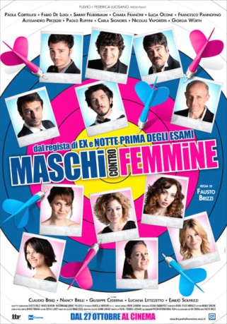

#7846 Kusswechsel 2 - Gegensätze ziehen sich aus
 gesehen am 04.02.2018
gesehen am 04.02.2018
 
 IMDB-Wertung: 5.8 / 10
IMDB-Wertung: 5.8 / 10  Metascore: 0
Metascore: 0 
Jahr: 2010
Dauer: 112 Minuten
FSK: 12
Land: Italien Studio: Filmtrade - Spentzos FilmTonspuren:
Untertitel: Deutsch,
Auflösung: 1080p (1920x816) Größe: 6891 MB
Genre: Komödie
Regisseur: Fausto Brizzi
Drehbuch: Fausto Brizzi
Soundtrack: Bruno Zambrini
Darsteller:
- Francesco Pannofino als Vittorio
- Nicolas Vaporidis als Andrea
- Giuseppe Cederna als Renato
- Chiara Francini als Marta
 Luca Calvani als Marco
Luca Calvani als Marco- Isabelle Adriani als Svetlana
- Marta Zoffoli als Lisa Brancale
- Daniel McVicar als Captain William T. Bell
- Armando De Razza als Roberto
- Paola Cortellesi als Chiara
- Fabio De Luigi als Walter
- Lucia Ocone als Monica
- Alessandro Preziosi als Diego
- Paolo Ruffini als Ivan
- Carla Signoris als Nicoletta
- Giorgia Wurth als Eva
- Claudio Bisio als Marcello
- Nancy Brilli als Paola
- Luciana Littizzetto als Anna
- Emilio Solfrizzi als Piero
- Sarah Felberbaum als Francesca
- Massimiliano Bruno als
- Brando Taccini als Fulvio
- Luca Canale Brucculeri als Collega d'ufficio
- Laura Barriales als Ramona Gomez
- Lorena Antonioni als Dancer
- Serena Autieri als Diana
- Federico Bava als Impiegato
- Rajae Bezzaz als Blonde Dancer at Gay Parade
- Maurizia Cacciatori als Herself
- Metis Di Meo als Tatiana
- Filippo Giusti als Ragazzo spiaggia
- Francesca Piccinini als Herself
- Taiyo Yamanouchi als Cacciatore di frodo
Datei: X:\2-Dilogie(G-M)\Kusswechsel\Kusswechsel 2 - Gegensätze ziehen sich aus (2010, FSK12, 1920x816).mkv seit 25.12.2017
Festplatte: HD Collection-2(A-Z)-3(A-M)
 Alle Filme aus Gruppe '2-Dilogie(G-M)\Kusswechsel'
Alle Filme aus Gruppe '2-Dilogie(G-M)\Kusswechsel'